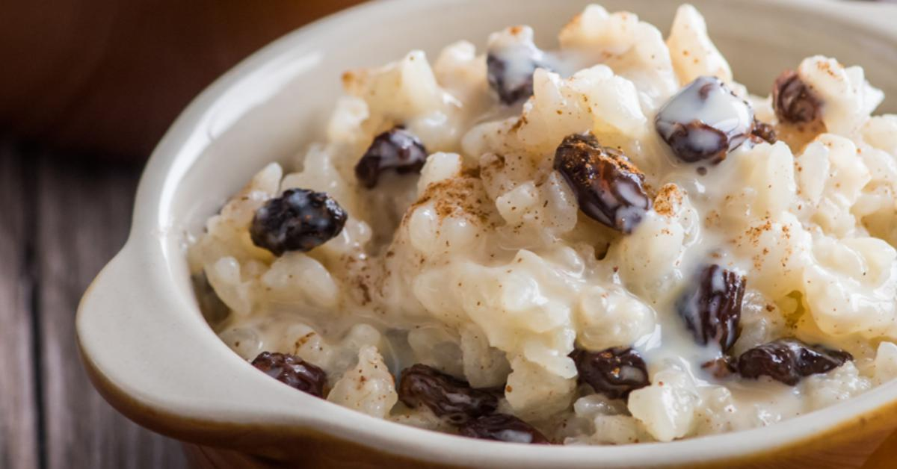

Arroz Con Leche
Home

Description
Arroz con leche is sweet and delicious rice pudding that
is enjoyed by many different cultures in different ways.
My mexican mother would often make arroz con leche during
holiday season and serve it warm with raisins preparing
for a cozy day of blankets, video games, and cartoons.
Cinnamon, evaporated milk, and condensed milk make the
the dish very sweet and creamy. This dish is very delicious
and I would highly recommend anyone to make this for those
weekends where its raining and you just want to relax under
some blanket.
Ingredients
- 1 Cup of Whole Milk
- 7 Cup of Water
- 1 Cup Whole Milk
- 2 Cinnamon Sticks
- 1 Cup Long-Grain White Rice
- 1 (14-ounce) Can Wweetened Condensed Milk
- 1 (12-ounce) Can Evaporated Milk
- Ground Cinnamon, for Topping
Steps
- Combine water, rice, and cinnamon sticks in a large
saucepan over medium-high heat. Bring to a boil,
uncovered, and cook for 16-18 minutes.
- Drain any remaining liquid, remove the cinnamon
sticks, and return the rice to the pan over medium-high heat.
Add sweetened condensed milk, evaporated milk, and whole milk,
and bring to a boil.
- Reduce the heat to low and cook for about 20 minutes, stirring
regularly. The milk can easily burn, so it is important to
stir frequently as it thickens.
- Divide rice among serving cups and sprinkle with cinnamon.
Serve warm.